旋转体的面积、体积与展开
确定半径、高、母线及展开扇形关系，复杂阴影先分割再旋转。
奉贤 · 第8题 ★★★☆☆ · 教师预估
抛物线 x˙2=4y 的准线与圆 x2+y2=r2 相切，将圆绕直径所在直线旋转一周形成一个几何体，则该几何体的表面积为
宝山 · 第8题 ★☆☆☆☆ · 教师预估
已知圆柱的底面积为9π，侧面积为18π，则该圆柱的体积为
崇明 · 第14题 ★☆☆☆☆ · 教师预估
已知一个圆锥的轴截面是边长为2的等边三角形，则这个圆锥的侧面积为（ ）
A. 2π
B. 3π
C. 4π
D. 33π
普陀 · 第8题 ★★☆☆☆ · 教师预估
若一个圆锥的高为 2, ，侧面积为2 2π ，则该圆锥侧面展开图中扇形的中心角的大小为
杨浦 · 第10题 ★★★☆☆ · 教师预估
本题资料或解析有待核事项，预览不可作为已审定成品。
如图，点D､E分别是直角三角形ABC的边AB､AC上的点，斜边 AC=E 扇形的弧DE相切，已知AC=4,BC=2 ，则阴影部分绕直线AB旋转一周所形成的几何体的体积为

虹口 · 第4题 ★☆☆☆☆ · 教师预估
已知圆柱的底面半径为1，母线长为2，则其侧面积为
闵行 · 第4题 ★☆☆☆☆ · 教师预估
已知圆柱的底面半径为 3. ，高为3，则圆柱的体积为
空间位置关系与垂直证明
明确线线、线面、面面的判定条件，证明与度量小问相互依赖。
嘉定 · 第14题 ★★☆☆☆ · 教师预估
已知平面α和平面 ;β, ，直线 m⊂α ，直线 n⊂β, ，则下列结论一定成立的是（ ）
A. 若 ρ˙m//n, ，则 ∣α//β
B. 若 m˙˙ 与n为异面直线，则 α//β
C. ♯m⊥n ，则 ∣α⊥β
D. 若 n⊥α. ，则 m⊥n
嘉定 · 第17题 ★★★☆☆ · 教师预估
如图，在四棱锥 P−ABCD! 中，PA⊥平面ABCD， PA=AC=2,BC=1 1 AB=3.
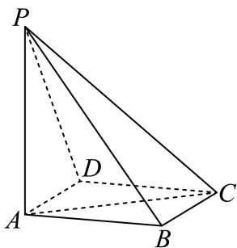
(1) (6分)若 AD//−ˉˉ 平面PBC，证明： AD⊥PB ；
(2) (8分)在我国古代数学典籍《九章算术》中，记载了一种特殊的三棱锥——鳖臑，其四个面均为直角三角形，找出本题图中的一个鳖臑，并计算它的体积和表面积
青浦 · 第18题 ★★★☆☆ · 教师预估
本题资料或解析有待核事项，预览不可作为已审定成品。
如图，已知四棱锥S−ABCD的底面为菱形， ∠BAD=3π,AS=CS

(1) (6分)求证：AC⊥平面BDS；
(2) (8分)若 AB=2,BS=3,DS=1 ，求四棱锥S−ABCD的体积.
线面角、二面角与翻折参数
构造平面角或法向量，翻折保持长度并显式记录二面角参数。
宝山 · 第12题 ★★★★☆ · 教师预估
本题资料或解析有待核事项，预览不可作为已审定成品。
空间中有相互垂直的两条异面直线 l1, l2 ，点A、 B∈l1,C, D∈l2 ，且 AB=4,CD=1 ，若 DA⊥DB ，且 AC=BC+2 ，则二面角 D−AB−C 平面角的余弦值最小为
宝山 · 第17题 ★★★☆☆ · 教师预估
本题资料或解析有待核事项，预览不可作为已审定成品。
如图，在四面体 ABCD 中， △BCD 是边长为2的正三角形，且 AB=AD=2.

(1) (6分)证明： BD⊥AC;
(2) (8分)若E是BC的中点，且二面角 A−BD−( C的大小为 2π ，求AE与平面BCD所成角的大小.
徐汇 · 第17题 ★★★☆☆ · 教师预估
如图， ABCD−A1B1C1D1 是一块正四棱台形铁料，上、下底面的边长分别为20cm和40cm，高30cm

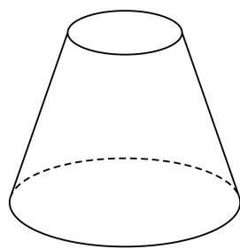
(1) (6分)求正四棱台 ABCD−A1B1C1D1 的侧面 BCC1B1 与底面ABCD所成二面角的大小；
(2) (8分)现削去部分铁料（不计损耗），将原正四棱台打磨为一个圆台，使得该圆台的上、下底面分别为原正四棱台上、下底面正方形的内切圆及其内部．求削去部分与原正四棱台的体积之比
普陀 · 第17题 ★★★☆☆ · 教师预估
如图，在三棱柱 ABC−A1B1C1 中， AC=AA1=AB=2,∠BAA1=3π ，且
CA1=CB,CA1⊥AB1

(1) (6分)求证：平面 CAB1⊥ 平面 AA1B1B⋅
(2) (8分)求直线 CA1 与平面 BB1C1 C所成的角的正弦值.
松江 · 第18题 ★★★☆☆ · 教师预估
已知梯形PBCD中， PD//BC ，E为PD上的一点且 BE⊥PD PE=BE=1 BC=21ED ，将△PBE 沿BE翻折使得二面角P−BE−C的平面角为θ，连接PC、PD，F为棱PD的中点.
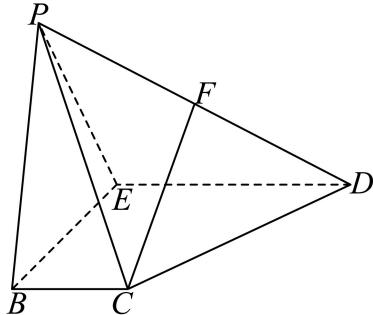
(1) (6分)求证： FC// 平面PBE；
(2) (8分)当 ∣θ=32π 时，求直线FC和平面BCDE所成角的大小.
浦东 · 第18题 ★★★☆☆ · 教师预估
本题资料或解析有待核事项，预览不可作为已审定成品。
如图，四边形ABCD为长方形，PA⊥平面ABCD， AB=AP=2 ，AD = 3
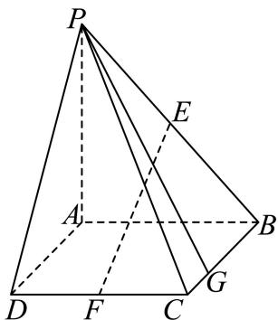
(1) (7分)若E、F分别是PB、CD的中点，求证：EF∥平面PAD；
(2) (7分)边BC上是否存在点G，使得直线 PG. 与平面PAD所成的角的大小为 30∘? 若存在，求BG长；若不存在，说明理由
长宁 · 第15题 ★★★★☆ · 教师预估
如图，等腰直角三角形ABC中， ∠A=90∘ ，点E是边AC的中点，点D是边BC上一点（不与C重合），将三角形DCE沿DE逆时针翻折，点C的对应点是 C1 ，连接 CC1 ，设θ为二面角 C1−DE−C 大小， θ∈(0,π) ．在翻折过程中，下列说法当中不正确的是（ ）
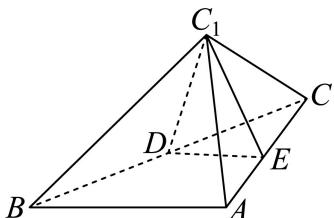
A. 存在点D和θ，使得 DC1⊥AC
B. 存在点D和θ，使得 BC1⊥AC
C. 存在点D和θ，使得 BC1⊥DE
D. 存在点D和θ，使得 CC1⊥DE
闵行 · 第17题 ★★★☆☆ · 教师预估
如图，在四棱锥P − ABCD中，底面ABCD为长方形，PA⊥底面ABCD，E是 PCΠ 中点，已知AB=2,AD=22,PA=2
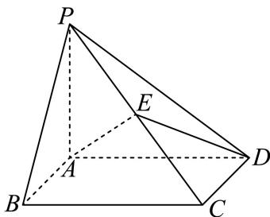
(1) (6分)证明： AD⊥BP;
(2) (8分)求二面角E − AD − B的大小
青浦 · 第12题 ★★★★☆ · 教师预估
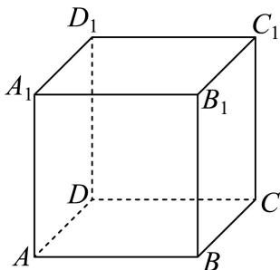
如图，正方体 ABCD−A1B1C1D1 绕直线 DB1 旋转 3π ，直线AB旋转至直线 A′B′ ，则直线AB与直线A′B′ 所成角的大小为
静安 · 第19题 ★★★★☆ · 教师预估
如图，在正三棱柱 ABC−A1B1C1 中， AA1=2AC=4 ，延长CB至D，使 CB=BD ，E是线段BC的中点

(1) (8分)求证：
①直线 C1B// 平面 AB1D ；
② AE⊥DB1
(2) (6分)求二面角 B1−AD− C的正弦值
黄浦 · 第18题 ★★★☆☆ · 教师预估
在四面体ABCD中， DB=DC=2 DB⊥DC

(1) (6分)若△ABC为正三角形，平面 ABC⊥ 平面DBC，求四面体ABCD体积；
(2) (8分)若AB = AC = 4，AD = 3，求二面角A − BC − D的大小
点线距离与点面距离
用垂线、法向量或等体积法降维，区分真实高与斜线长。
崇明 · 第17题 ★★★☆☆ · 教师预估
如图，在四棱锥 P−ABCD 中，底面ABCD是边长为2的正方形，且 CB⊥BP,CD⊥DP PA=2 ，点E，F分别为PB，PD的中点.

(1) (6分)求证： PA⊥ 平面ABCD；
(2) (8分)求点P到平面AEF的距离.
徐汇 · 第7题 ★★☆☆☆ · 教师预估
已知PA⊥平面ABC， △ABC 是直角三角形，且 AB=AC=2 ，PA = 4，则点P到直线BC的距离是
杨浦 · 第18题 ★★★☆☆ · 教师预估
座落于杨浦滨江的世界技能博物馆由百年历史文化保护建筑改建而成，其中的支柱保留了原有的正八棱柱，既考虑了结构力学优势，又体现了对历史建筑的尊重和传承.如图， O1,O 分别为正八棱柱的上下两个底面的中心，已知 ∣OA=1,AA1=4

(1) (6分)求证： BC⊥C1F ；
(2) (8分)求点O到平面 ACG1 的距离.
虹口 · 第17题 ★★★☆☆ · 教师预估
如图所示，在四棱锥 P−ABCD 中，PA⊥平面ABCD， AB⊥AD AD//BC AB=BC=2
AD=4.
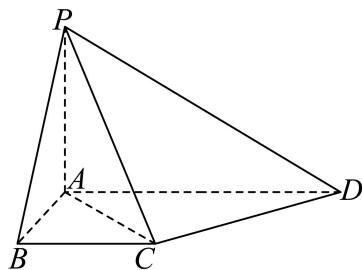
(1) (6分)求证：平面 PAC⊥ 平面PCD；
(2) (8分)若异面直线PB和CD所成角为 3π ，求点B到平面PCD的距离.
金山 · 第18题 ★★★☆☆ · 教师预估

如图，在四棱锥 P−ABCD 中，PA⊥平面 PBC,AB=2DC=4,BC=22,AB⊥BC,DC//AB
(1) (6分)证明：平面 ABCD⊥ 平面 PAB
(2) (8分)若 ∠ABP=3π ，求点C到平面PAD的距离.
长宁 · 第18题 ★★★★☆ · 教师预估
本题资料或解析有待核事项，预览不可作为已审定成品。
如图，在直三棱柱 ABC−A′B′C′ 中， AB⊥AC,AC=AB=2,AA′=22 ，点D是棱AA′的中点
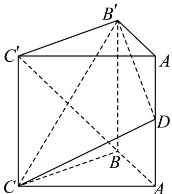
(1) (6分)求证：平面 CDB′⊥ 平面 CBB′C′ ；
(2) (8分)求点 C′ 到平面 CDB′ 的距离以及三棱锥 C′−CDB′ 的体积
黄浦 · 第9题 ★★★☆☆ · 教师预估
本题资料或解析有待核事项，预览不可作为已审定成品。

某商场要悬挂一个棱长为2米的正方体物件作为装饰，如图，A、B、C、D为该正方体的顶点，BB1, CC1, DD1 为三根直绳索，且均垂直于屋顶所在平面α．若平面BCD与平面α平行，且点A到α的距离为2米，则直绳索 BB1 的长度约为 米．（结果精确到0.01米）
体积分割、动点与定体积
抓住同底等高与总体积分割，动点轨迹先转为平行面或线段。
松江 · 第10题 ★★★★☆ · 教师预估
本题资料或解析有待核事项，预览不可作为已审定成品。
如图在三棱锥 P−ABC 中，PA、PB、PC两两垂直，且 PA=3,PB=2,PC=1 ，设M是底面ABC内一点，定义 f(M)=(m,n,p) ，其中 m,n,p 分别表示三棱锥 M−PAB. ，三棱锥 M−PBC 三棱锥 M−PCA 的体积.若 f(M)=(32,x,y) ，且 xa+y1≥ 12恒成立，则正实数 {a 的最小值为
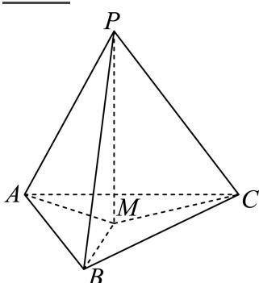
松江 · 第15题 ★★★☆☆ · 教师预估
在正三棱柱 ABC−A1B1C1 中， AB=AA1=1 ，动点P满足 BP=λBC+BB1,λ∈(0 , 1) ，则下列几何体体积为定值的是（ ）

A. 四棱锥 P−A1ABB1
B. 四棱锥 P−A1ACC1
C. 三棱锥 P−A1B1C1
D. 三棱锥 P−A1BC
球面轨迹、截面与空间约束
将距离比例或单位向量条件转为球面和截面，截面分点要保留符号距离信息。
普陀 · 第11题 ★★★★☆ · 教师预估
在棱长为4的正方体 ABCD−A1B1C1D1′ 中， AN=2AM=21AC1 ，若一动点G满足GN=2GM ，则三棱锥 G−A1B1D1 体积的最大值为
浦东 · 第11题 ★★★★☆ · 教师预估
本题资料或解析有待核事项，预览不可作为已审定成品。
已知→a、 b,c 为空间中三个单位向量， za⋅b=b⋅c=c⋅a=0 ，若向量 ⋅p} 满足 ∣p−2a∣=23 ∣p−2b∣=23 ，则向量 p 与向量 :c 夹角的最小值为 ．（用反三角表示）
虹口 · 第16题 ★★★★☆ · 教师预估
本题资料或解析有待核事项，预览不可作为已审定成品。
在空间中，点O为定点，设集合 S={POP2−2OA⋅OP≤1,OA=1} ，则以下说法正确的是（ ）.①若 ⋅OP±OA 上的数量投影为 −51 ，则线段OP在运动过程中所形成的几何体体积为 37514π; ②对于任意的 Pi∈S∣ 以及任意的正实数 α˙ai ，设 OQ=∑i=14aiOPi ，若 ∑i=14ai=1 ，则 ∣Q∈S
A. ①是真命题，②是真命题
B. ①是真命题，②是假命题
C. ①是假命题，②是真命题
D. ①是假命题，②是假命题
闵行 · 第16题 ★★★★★ · 教师预估
本题资料或解析有待核事项，预览不可作为已审定成品。
设n为正整数，空间中n个单位向量构成集合 An={a1,a2,⋅⋅⋅,an} ，若存在实数t，满足对任意ai∈An,aj∈An,ai=aj ，都有 ai⋅aj=t ，则当 n 取得最大值时，t的值为（ ）
A. −21
B. 21
C. −31
D. 31
黄浦 · 第16题 ★★★★★ · 教师预估
本题资料或解析有待核事项，预览不可作为已审定成品。
给定四面体ABCD．平面α满足：①A、B、C、D四个点均不在平面α上，也不在α的同侧；②若平面α与四面体ABCD的棱有公共点，则该公共点一定是此棱的中点或两个三等分点之一．设A、B、C、D四个点到平面α的距离分别为d (i = 1,2,3,4)，那 Ldi 的所有不同值的个数组成的集合为（ ）
A. {1, 2, 3, 4}
B. {1, 2, 3}
C. {1, 2}
D. {1}
几何设计、切割与体积优化
建立侧棱或截割参数与高、底面积的关系，核实可行区间及极值可达性。
嘉定 · 第11题 ★★★★☆ · 教师预估
本题资料或解析有待核事项，预览不可作为已审定成品。
某建筑公司欲设计一个正四棱锥形纪念碑，要求其顶点位于容积为36π立方米的球形景观灯所在球面上．考虑到抗风、抗震等结构安全需求，侧棱长度l需满足 ±23≤l≤33. ．当纪念碑体积取得最大值时，正四棱锥的侧棱长约为 米（精确到0.01米）
奉贤 · 第19题 ★★★★☆ · 教师预估
本题资料或解析有待核事项，预览不可作为已审定成品。
将一块边长为10cm的正方形铁片制作一个正四棱锥的容器罩．同学们设计了甲、乙、丙三个不同的方案，各自裁下阴影部分，用余下的制作成正四棱锥容器罩，形如最右边的图．甲和丙是去制作有盖的容器罩，乙是去制作无盖的容器罩．假设加工过程中铁片损失忽略不计．设甲、乙、丙中白色的四个等腰三角形的底边分别是x、m、n

甲

乙
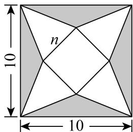
丙
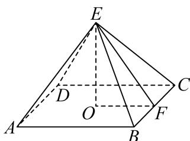
(1) (10分)请你选择其中的某一个方案，而且只需选一个方案（选择超过一个方案的，按第一个方案处理）．你选择的方案是______，求解以下2个问题：
①求出所选方案相对应的棱锥的侧面积 S(x),S(m),S(n) ；
②求出所选方案相对应棱锥的体积V(x)、 V(m), V(n) 的最大值
(2) (4分)假设三个方案中相应的体积最大值分别记作 V(x)max V(m)max V(n)max ，请直接写出三者的大小关系．（不写判断理由与过程）
金山 · 第7题 ★★☆☆☆ · 教师预估
已知圆锥底面半径为1，高为 3, ，则过圆锥母线的截面面积的最大值为
长宁 · 第11题 ★★★★☆ · 教师预估
现有一块正四面体木料PABC，其边长为3，现需要将木料进行切割，要求切割后底面ABC上任意一点Q到顶点P的距离不大于 7, ，则切割好后，木料体积的最大值是 ．（结果保留π）
静安 · 第9题 ★★★☆☆ · 教师预估
用总长为14.8m的钢条制作一个长方体容器的框架，且容器底面的长边比短边长0.5m（不计损耗）若要使该容器的容积最大，则容器的高为 m